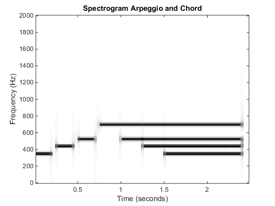
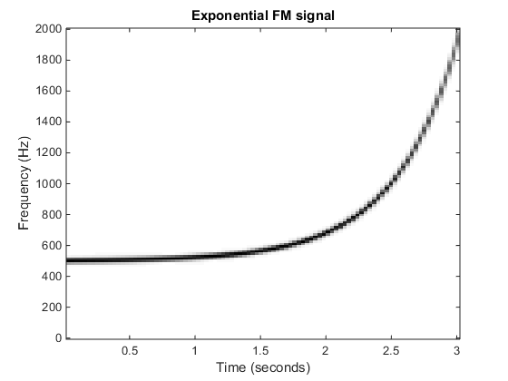

Lab_04 Homework
Contents
4.1 Synthesize an Arpeggio and a Chord
amps = [1,1,1,1,1,1,1];
phases = [0,0,0,0,0,0,0];
freq = [45, 49, 52, 57, 52, 49, 45];
fs = 4000;
tStart = [0, .25, .5, .75, 1.0, 1.25, 1.5];
durs = [.2, .2, .2, 1.65, 1.4, 1.15, .9];
maxTime = max(tStart + durs) + 0.1;
durLengthEstimate = ceil(maxTime*fs);
tt = (0:durLengthEstimate)*(1/fs);
xx = 0*tt;
for kk = 1:length(amps)
nStart = round(tStart(kk)*fs) + 1;
xNew = key2sinus(freq(kk), amps(kk), phases(kk), fs, durs(kk));
Lnew = length(xNew);
nStop = (nStart + Lnew - 1);
xx(nStart:nStop) = xx(nStart:nStop) + xNew;
end
plotspec(xx,fs,256);
title('Spectrogram Arpeggio and Chord');
xlabel('Time (seconds)');
ylabel('Frequency (Hz)');

4.2 Spectrogram of an FM Signal: Exponential and Sinusoidal Instantaneous Frequencies
sigFMexp = struct('Amp', 7.5, 'fc', 500, 'beta', 2.05, 'gamma', 3, 't1', 0, 't2', 3.04);
fsamp = 4000;
[FMxx, FMtt] = makeFMexpVals(sigFMexp, fsamp);
figure
plotspec(FMxx, fsamp, 256);
title('Exponential FM signal');
xlabel('Time (seconds)');
ylabel('Frequency (Hz)');
